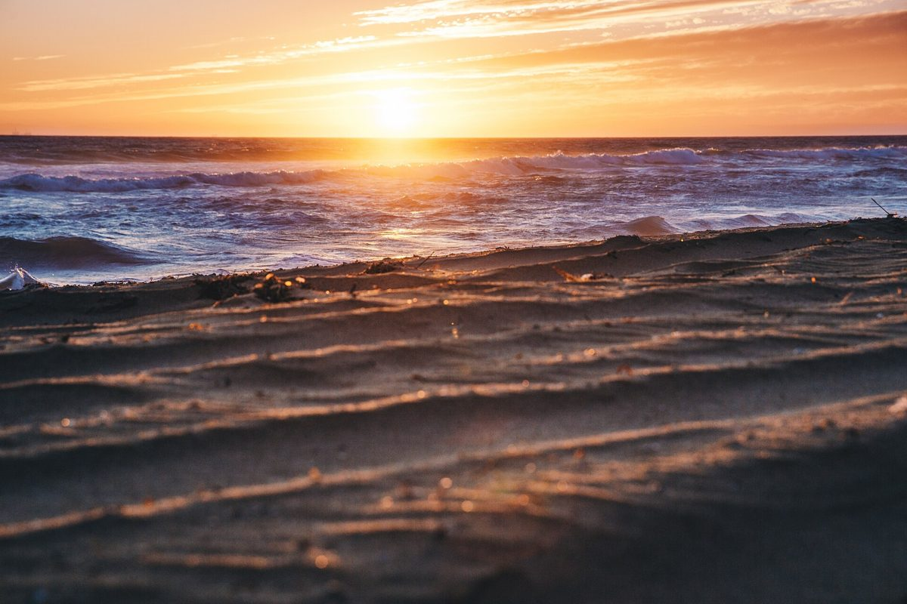
日立市・河原子海岸のカフェ
青い小屋の窓いっぱいに、
海をひとり占めする一杯を。
河原子海岸の目の前、太平洋を望むカウンター席で、クリームソーダとコーヒーをゆっくりと。
お店のこと
海の正面に建つ、青い小屋のようなカフェ。
紹介ブログによると、のんのんcafeは河原子海岸の真正面にある、青い小屋のような建物のカフェです。店内には太平洋を一望できるカウンター席と、テーブル席が2つあり、カウンターからは「一面の海」が広がると紹介されています。
看板メニューとして、青い炭酸にアイスクリームと生クリームをのせたクリームソーダが紹介されており、ほかに焼きサンドやナポリタンなどの軽食、コーヒーも取り上げられています。
情報源: Ameba ブログ「のんのんcafe」/Yahoo!マップ/Instagram
店名の由来やオーナーさまの想いは確認できていないため、掲載していません。見出しの言い回しは制作側の表現です。
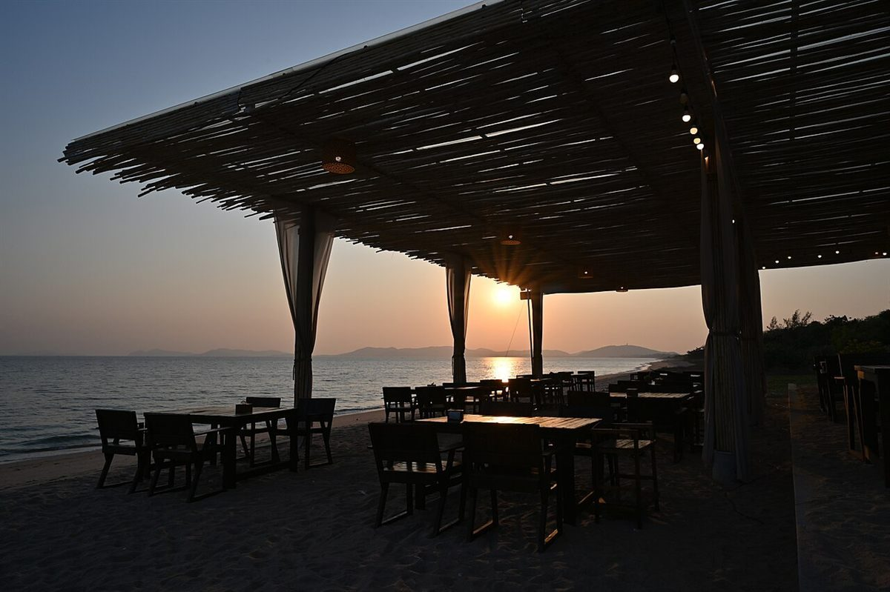
メニュー
海を眺めながら味わう、軽食とドリンク。
紹介記事で触れられていたメニューの一部です。内容・価格・提供状況は変わることがあるため、最新情報はInstagramでご確認ください。
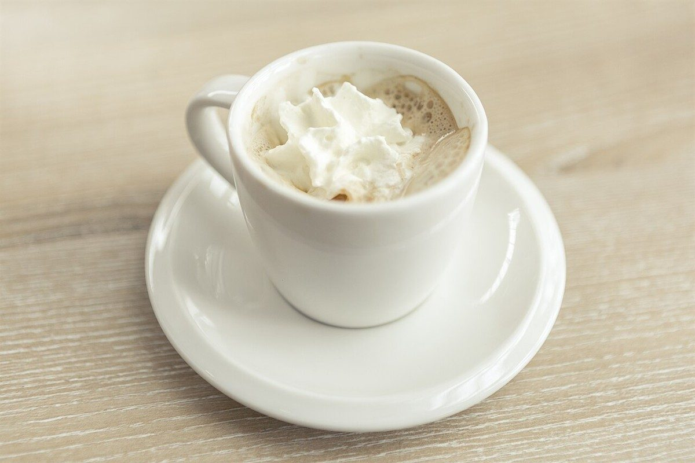
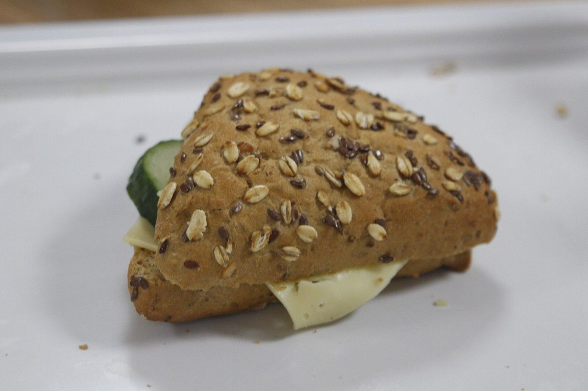
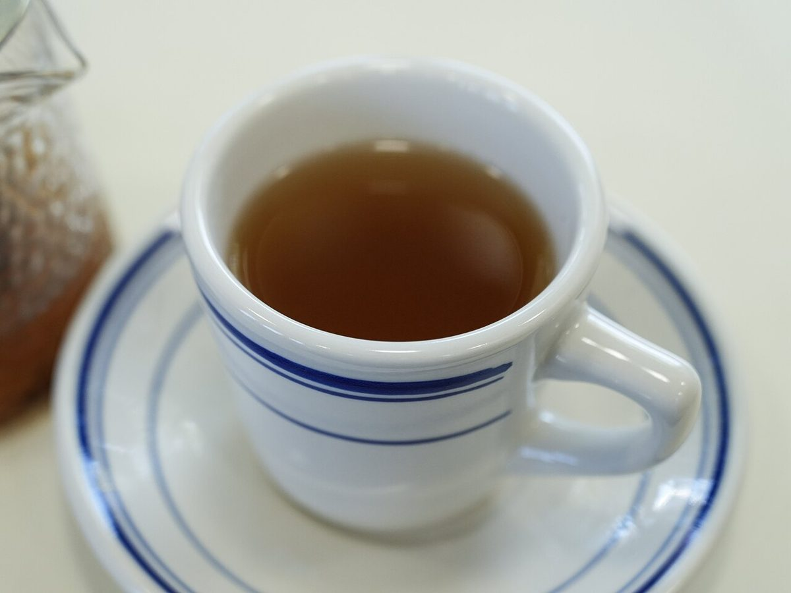


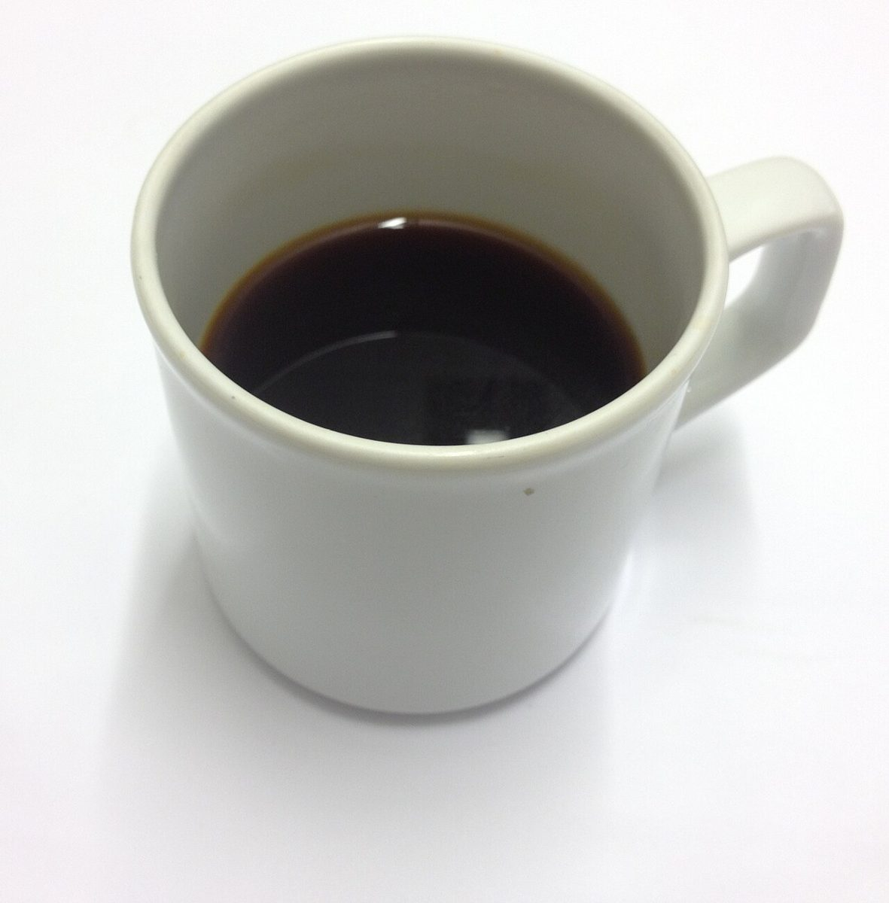
海のある時間
波の音を聞きながら、ひと息つく。
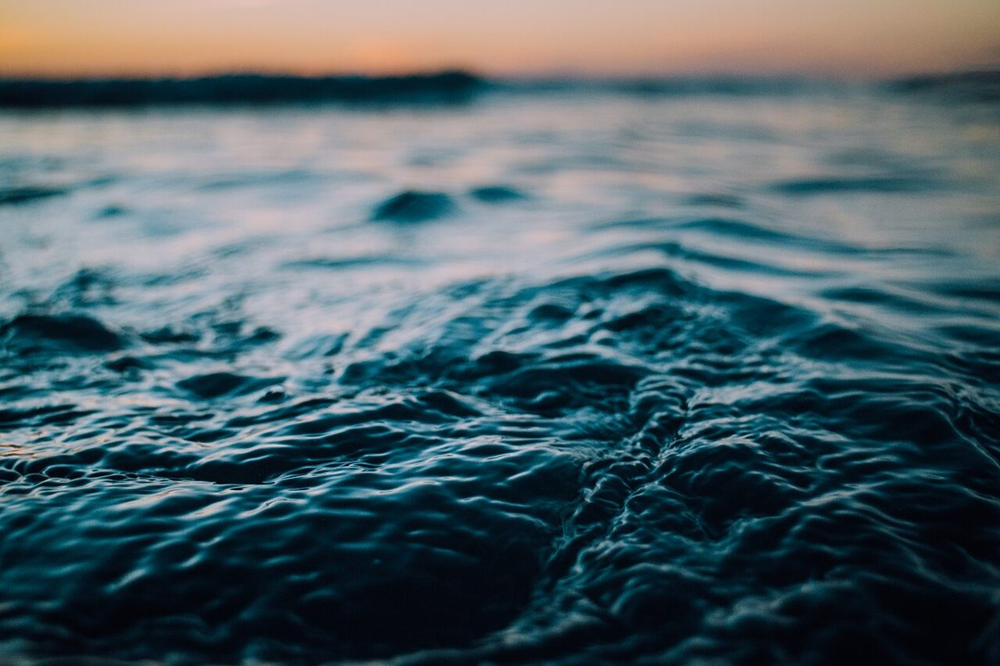
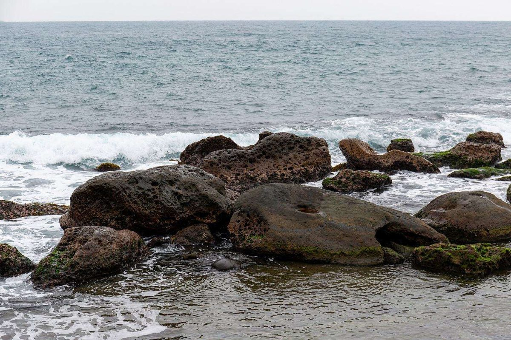
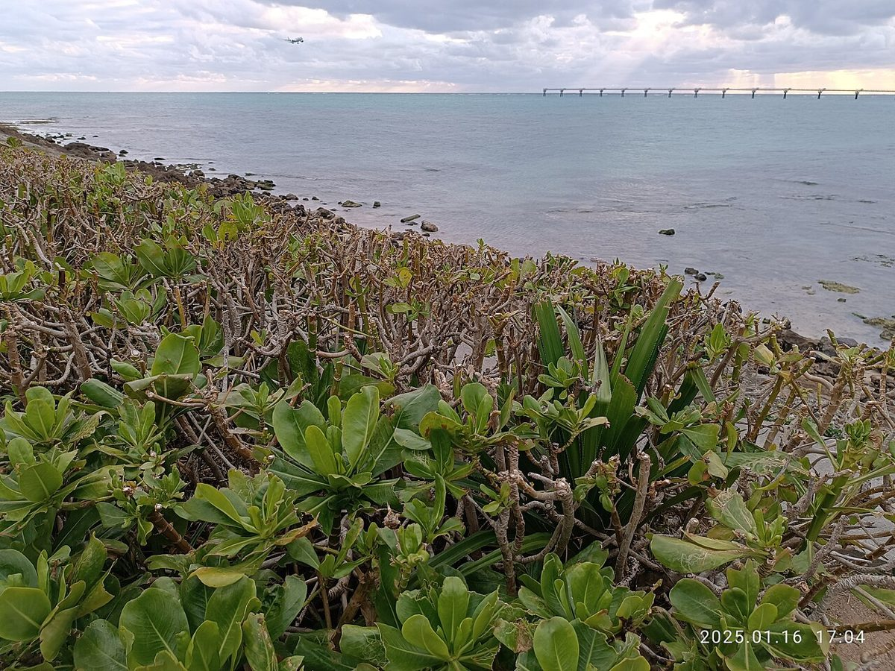
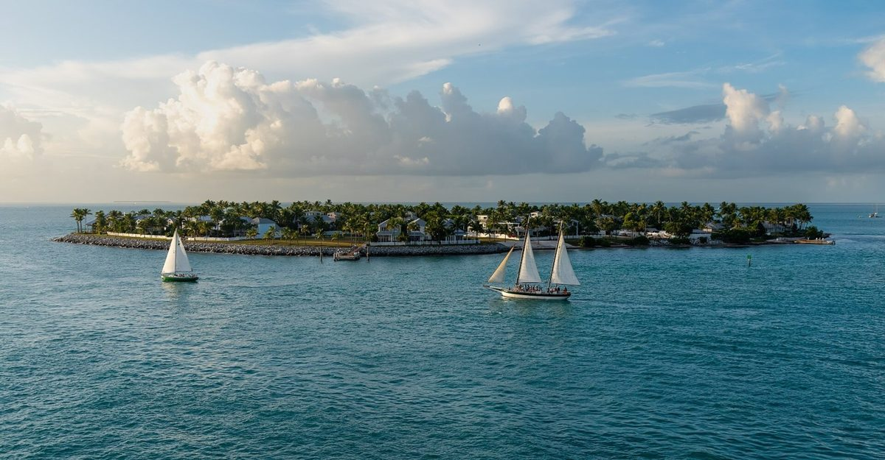
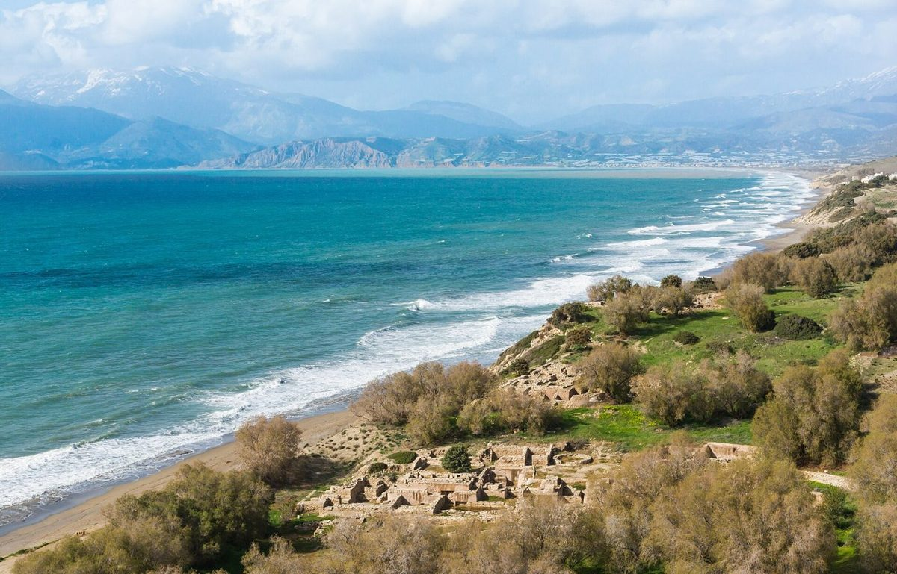
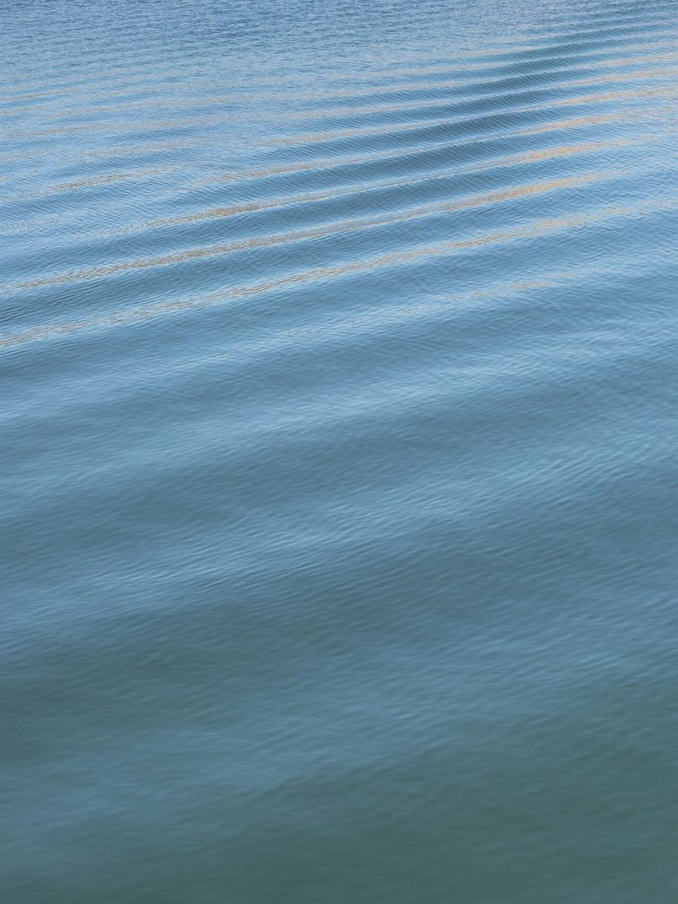
口コミ
こんなふうに過ごせたら、という想像
以下は制作側が作成した想像の文章であり、実在のお客様の声ではありません。
カウンターに座ると、目の前が海。青いクリームソーダを眺めながら、のんびり過ごせそうです。
散歩のあとに寄って、あたたかいコーヒーと軽食でひと休み。そんな使い方が似合いそうなお店です。
夕方に海の色が変わっていく時間帯に、ゆっくりお茶をしてみたいと思わせてくれます。
アクセス
ご案内
| 店名 | のんのんcafe |
|---|---|
| 所在地 | 〒316-0005 茨城県日立市河原子町３丁目２９−３ |
| 電話 | 準備中 |
| 営業時間 | 準備中 |
| 定休日 | 準備中 |
| SNS | Instagram @nonnoncafe.1117 |
臨時休業などで営業日が変わることがあるとの記載もあるため、最新情報はInstagramをご確認ください。